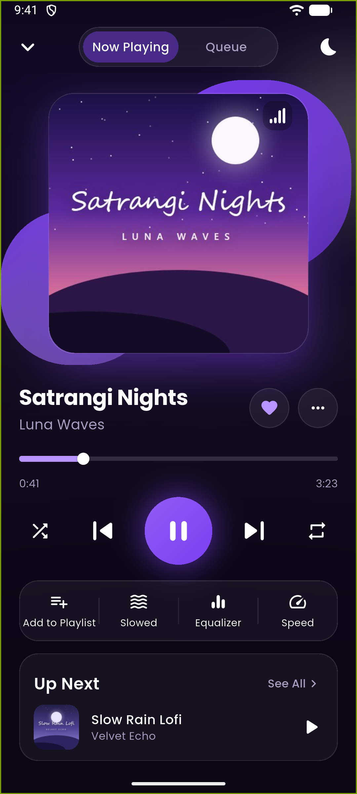
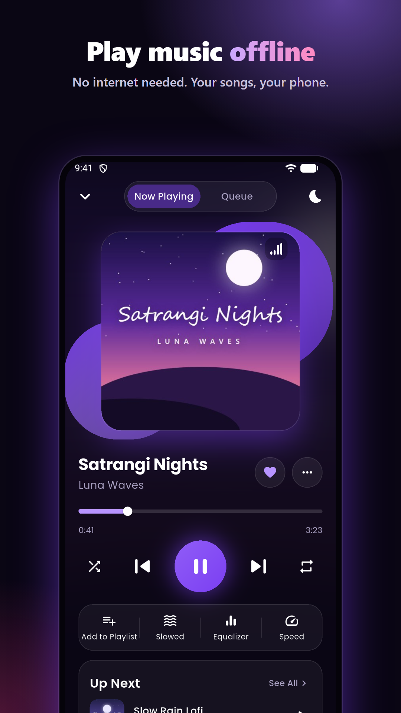
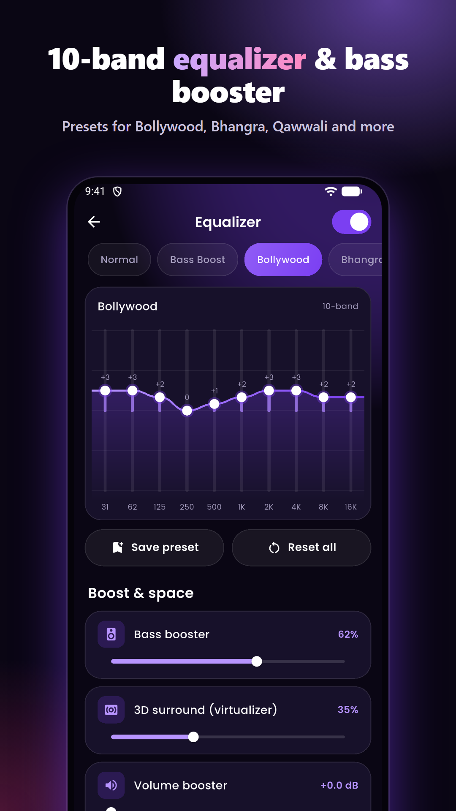
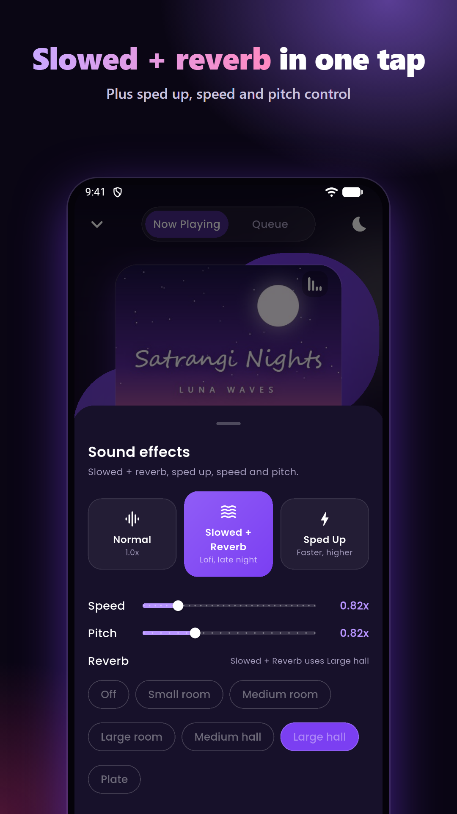
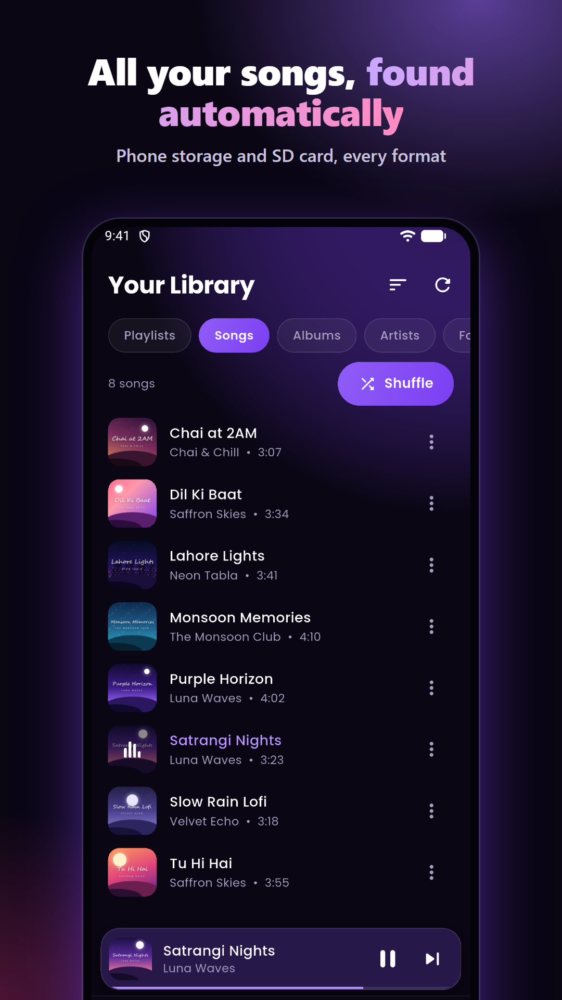
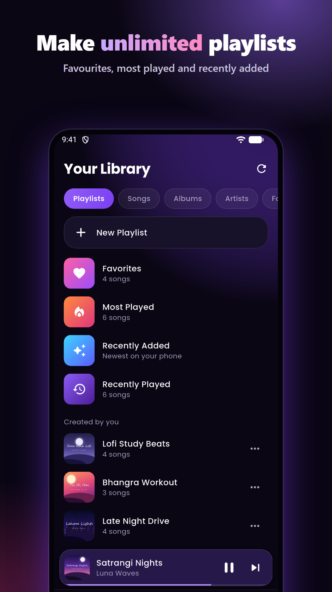
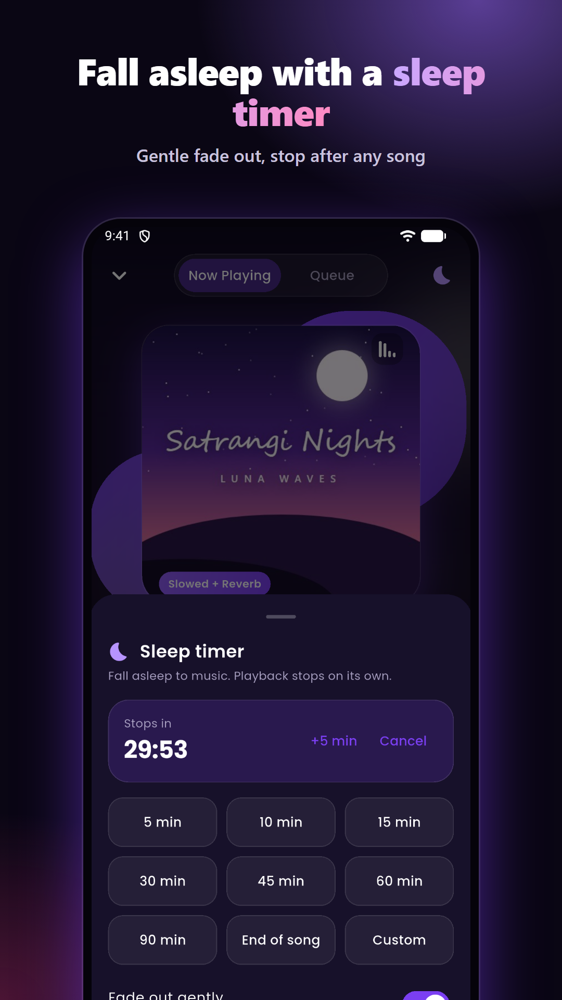

Play the songs already on your phone, no internet needed. 10-band equalizer, bass booster, one-tap slowed + reverb and a sleep timer, in a player light enough for old phones.
Get it on Google PlayFree · No account · No internet permission

Finds every MP3, M4A, FLAC, WAV and OGG song on your phone and SD card automatically.
Presets including Bollywood, Bhangra, Qawwali, Lofi and Bass Boost, or save your own.
Deeper bass and 3D surround for earbuds, headphones and Bluetooth speakers.
Turn any song into a lofi slowed + reverb version. Speed 0.5x to 2x and pitch control.
Fall asleep to music. Stops after a set time or the current song, with a gentle fade.
Unlimited playlists, favourites, most played, plus home-screen and lock-screen controls.






Yes. Tunora plays the MP3 and audio files already saved on your phone or SD card. It never needs internet or mobile data.
Open any song in Tunora and tap Slowed. The song slows down, the pitch drops and a hall reverb is added. Tap again to go back to normal.
No. Tunora only plays audio files that are already on your device. It does not download or stream music.
Yes. Tunora is lightweight, works on Android 7 and newer, and has no ads or background data use.